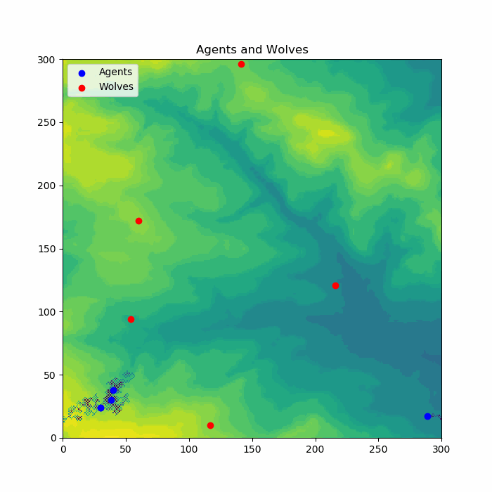

Projects
Evie Cookson
Home
Projects
Email
My Coding Projects
Coding Practicals:
- Agent Based Modelling - This is a basic agent based model.
- Code Shrinking I & II - The model has been made more efficient through code shrinking.
- Building Tools - This introduces functions to the model. The extension tasks have also been attempted in order to calculate maximum and minimum distances between agents, making sure pairs aren't tested twice or against themselves.
- Agent Framework - This introduces an additional Agent Framework file.
- Input/Output - This sets the environment data from a file and saves the results of the model runs to new files.
- Communication - This has the agents communicating with each other. The extension work includes the model getting data from command line input.
- - This gives the model a graphic user interface. The extension work uses data from the internet to set the starting co-ordinates of the agents.
Final Agent Based Model:
- Final Model - This model incorporates most of the methods learnt through the above practicals in order to create a final agent based model. More detail about the model can be found by following the link.
